Daten sortieren und filtern mit Excel
Diese Lecture-Einheit zielt darauf ab, unseren Übungsdatensatz und das csv-Format kennen zu lernen. Hierzu benutzen wir das Tabellenkalkulationsprogramm Excel. Wir schauen uns an, wie eine csv in Excel geöffnet und formatiert werden kann und zeigen grundlegende Excel-Funktion wie das Filtern und Sortieren von Daten.
Was ist Excel?
Excel ist ein kostenpflichtiges Tabellenkalkulationsprogramm von Microsoft. Es dient vor allem der Datenanalyse und -visualisierung und gilt als weltweit verbreitetstes Programm seiner Art.
Excel ist tabellarisch aufgebaut, in
- durchnummerierte Zeilen:
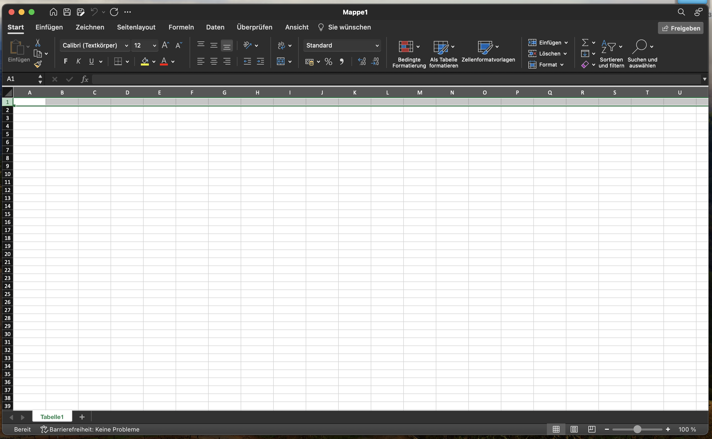
- und durchalphabetisierte Spalten:
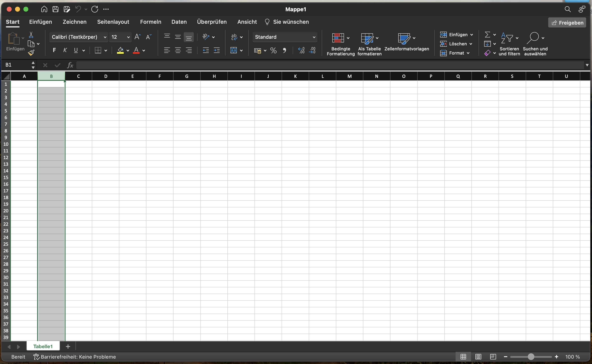
Bei einem einzelnen Feld spricht man von einer Zelle.
Zellen können mittels Formeln zueinander in Relation gesetzt werden, zum Beispiel aufsummiert. Eine beliebte Anwendung von Excel ist darum im Rechnungswesen.
Da sich die Höhe und Breite von Zellen automatisch und manuell variieren lassen, gibt es allerdings auch Beispiele für die Zweckentfremdung des Programms zur Herstellung von Pixel Art.
Installation
An den Unis Marburg, Mainz und Frankfurt gibt es jeweils Lizenzverträge, damit die Microsoft Office-Programme (inklusive Excel) von Universitätsangehörigen kostenlos genutzt werden können.
Downloadanleitungen sollten jeweils unter folgenden Links zu finden sein:
Hochschulrechenzentrum der Uni Marburg:
https://www.uni-marburg.de/de/hrz/dienste/software/microsoft_office
Zentrum für Datenverarbeitung der Uni Mainz:
https://www.zdv.uni-mainz.de/jgu-signin-oidc/tag/lizenzen/
Hochschulrechenzentrum der Uni Frankfurt:
https://www.rz.uni-frankfurt.de/73202101/Microsoft_Office_f%25C3%25BCr_Studierende
Ansonsten kann auch eine kostenlose, aber zeitlich begrenzte Testversion verwendet werden: https://www.microsoft.com/de-de/microsoft-365/try?culture=de-de&country=de
Download des Beispieldatensatzes
Der Beispieldatensatz, mit dem wir im Rahmen aller drei Veranstaltungen arbeiten, findet sich unter folgendem Link zum Download.
Bei dem Datensatz handelt es sich um eine csv-Datei. CSV steht dabei für Comma-Separated Values. Dieses Dateiformat hat den Vorteil, dass es sich mit einer Reihe unterschiedlicher Programme öffnen und bearbeiten lässt.
Öffnen einer csv-Datei in Excel
Um eine csv-Datei in Excel zu öffnen, kann man auf verschiedene Arten und Weisen vorgehen. Die hier vorgestellte Möglichkeit 1 wird allerdings gegenüber den anderen beiden empfohlen.
Möglichkeit 1
- Zuerst öffnet man Excel.
- Dann wählt man oben den Reiter „Daten“ aus und klickt dort auf „Daten abrufen (Power Query)“.
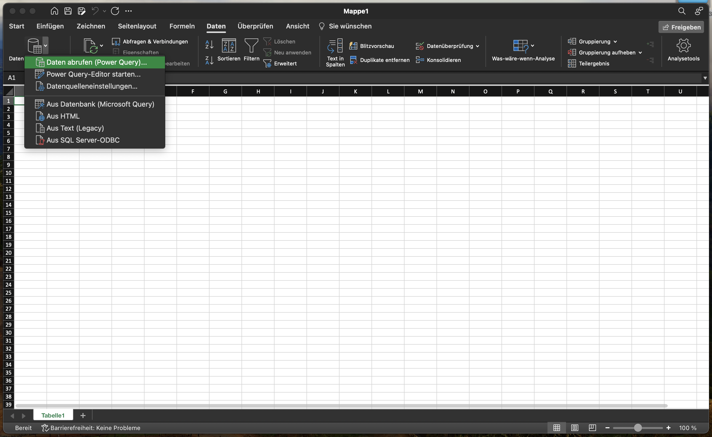
- Daraufhin erscheint eine Übersicht an Optionen, von denen man „Text/CSV“ auswählt und anklickt.
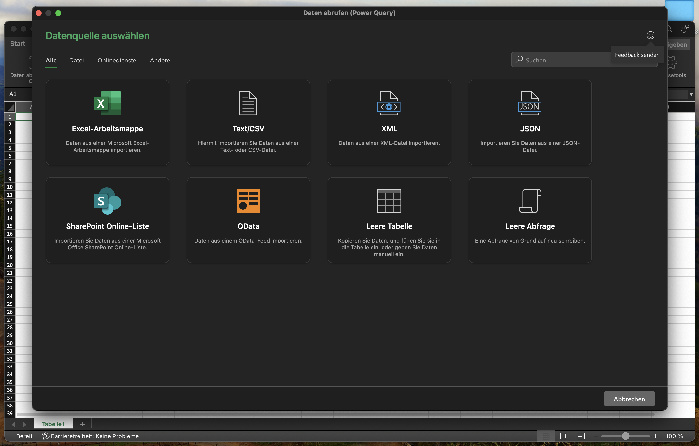
- Anschließend durchsucht man seine Dateien nach dem gewünschten Datensatz (in diesem Fall unserem Beispieldatensatz).
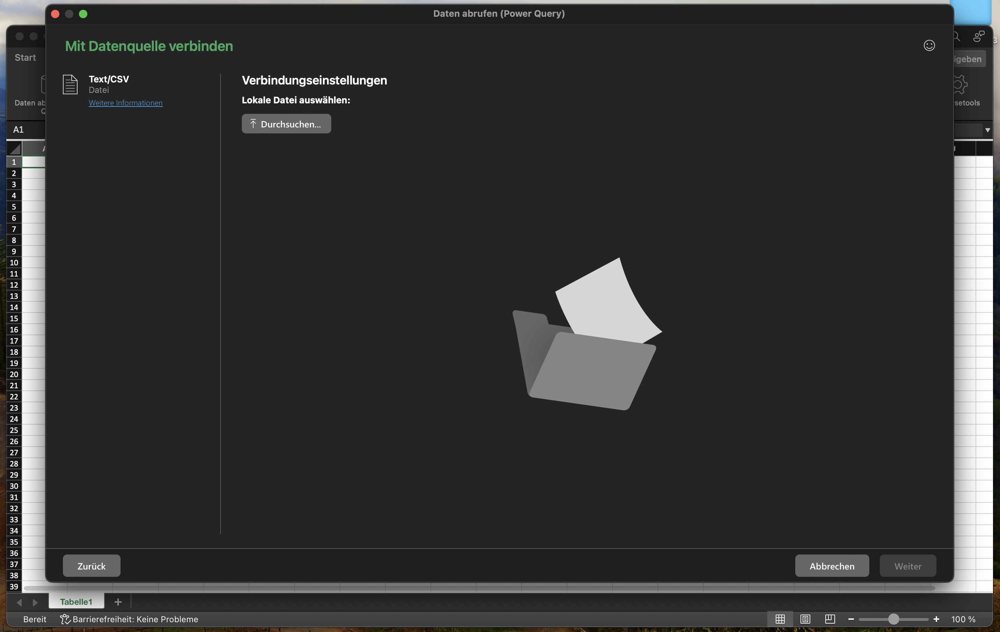
- Und klickt auf „Daten importieren“, um diesen in Excel zu öffnen.
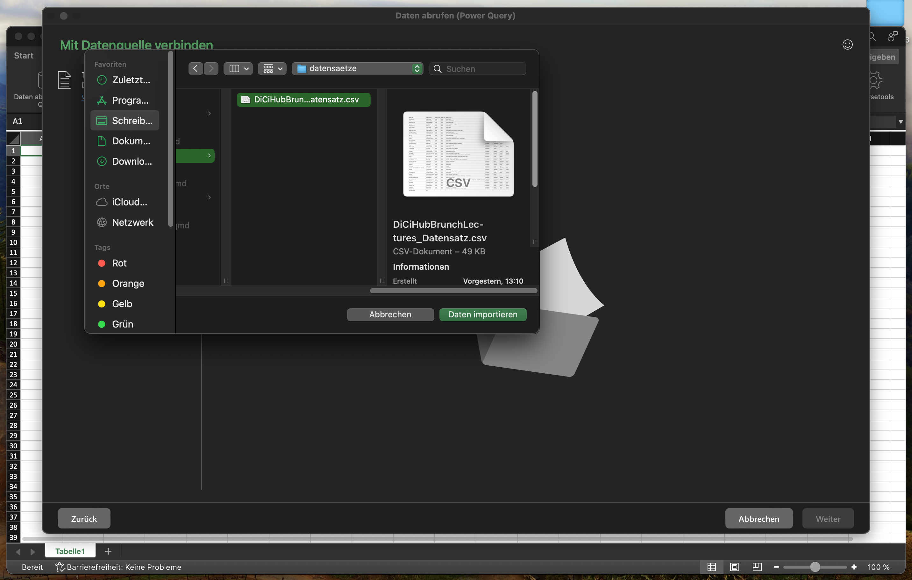
- Hat man die richtige Datei ausgewählt, klickt man unten auf „Weiter“.
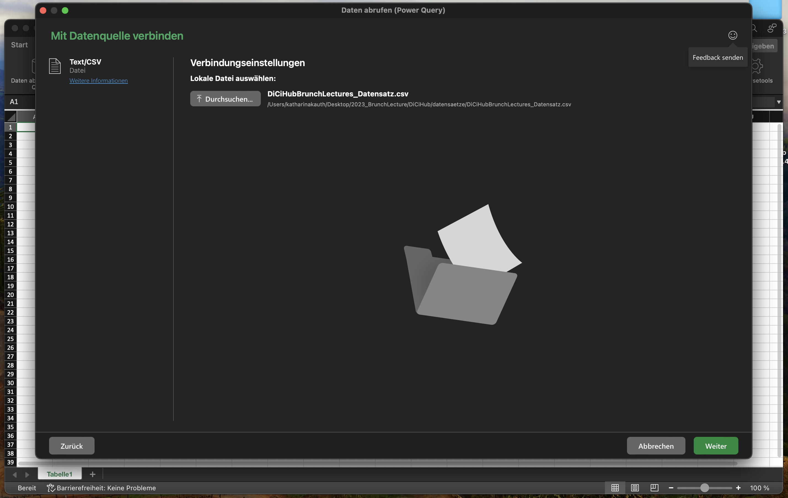
- Excel präsentiert daraufhin eine Voransicht des Datensatzes.
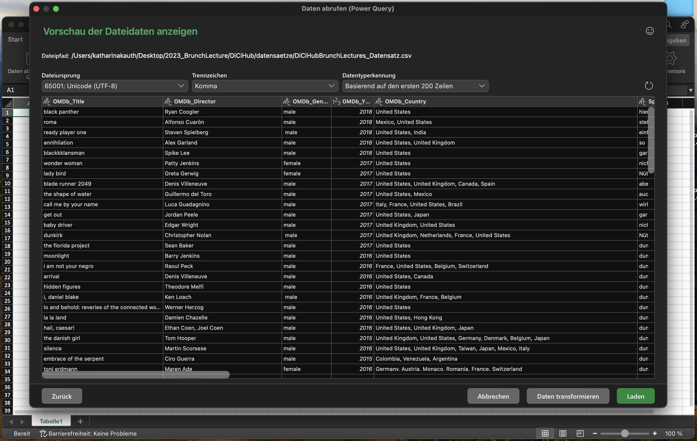
Ist man mit den Einstellungen zufrieden, klickt man unten auf „Laden“.
Excel importiert daraufhin die Daten aus der csv-Datei in Tabellenform, sodass direkt damit gearbeitet werden kann.
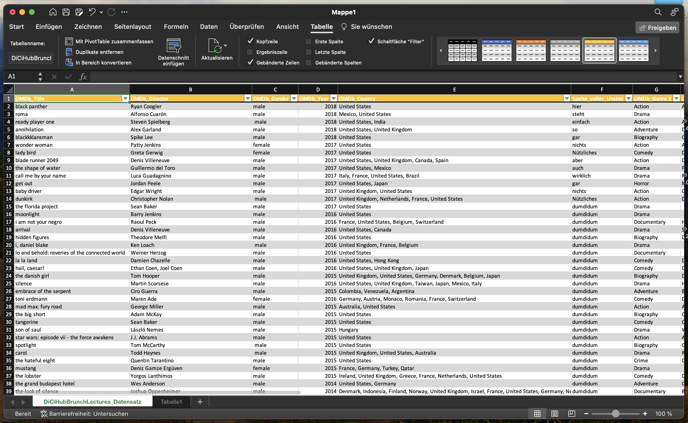
Möglichkeit 2
- Man öffnet die CSV-Datei mit Excel im „.xlsx“-Format.
- Die Daten sind anschließend in Excel lesbar, allerdings noch nicht verarbeitbar, da sie nicht als Tabelle formatiert sind.
- Um die Daten als Tabelle zu formatieren klickt man unter dem Reiter „Start“ auf „Als Tabelle formatieren“.
- In dem daraufhin erscheinenden Fenster überprüft man, ob der Datenbereich korrekt ist, und klickt anschließend auf „OK“.
Möglichkeit 3
- Per Rechtsklick auf die CSV-Datei wählt man über die Option „Öffnen mit“ Excel aus.
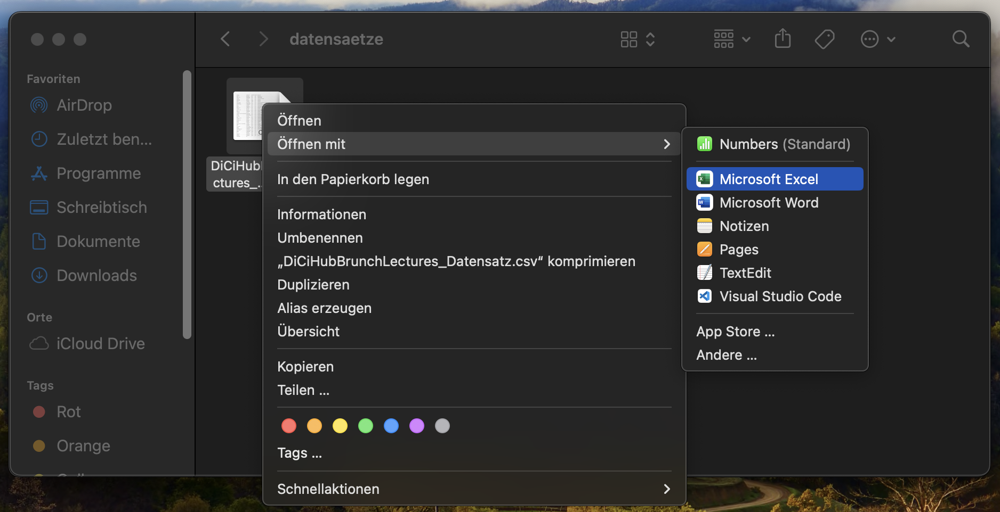
- Die Daten werden hieraufhin in Excel importiert, allerdings werden dabei alle Daten in die erste Spalte gequetscht. Und es erscheint die Hinweisemeldung, dass eventuell nicht alle Daten korrekt importiert wurden.
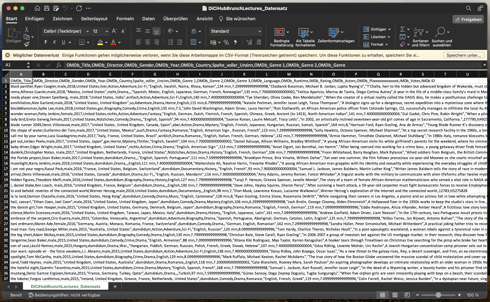
- Wer hier noch nicht aufgegeben hat, markiert per Klick auf Spalte A die gesamte Spalte und wählt anschließend unter dem Reiter „Daten“ die Funktion „Text in Spalten“ aus.
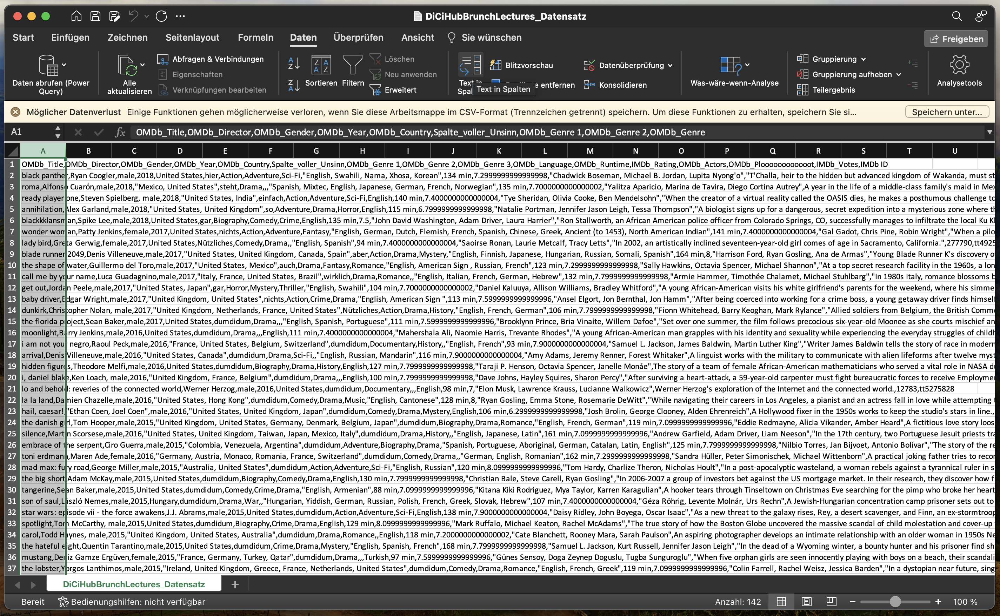
- In dem auftauchenden Fenster wählt man die Option „Mit Trennzeichen versehen“ aus und klickt auf „Weiter“.
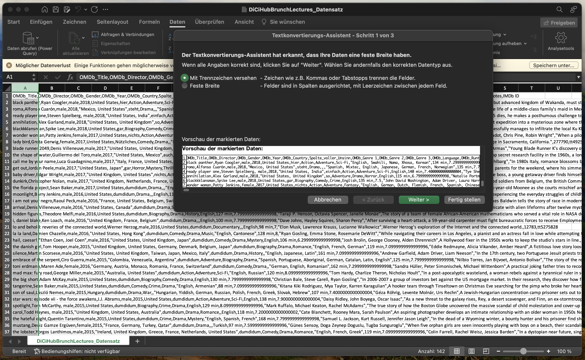
- Da es sich um eine CSV-Datei handelt, also um Comma-Separated Values, wählt man als Trennzeichen „Komma“ aus und klickt auf „Weiter“, wenn die Vorschau korrekt aussieht.
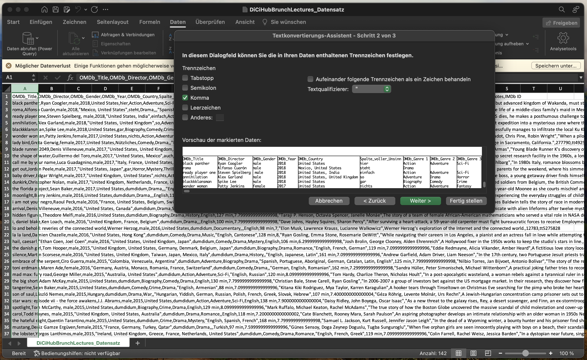
- In einem zweiten Optionsfenster hat man anschließend die Möglichkeit einzelne Spalten speziell zu formatieren (zum Beispiel als Datum oder Zahl). Überspringt man diesen Schritt, werden die Daten eventuell fehlerhaft importiert, weil Excel ihnen ein falsches Format zuordnet.
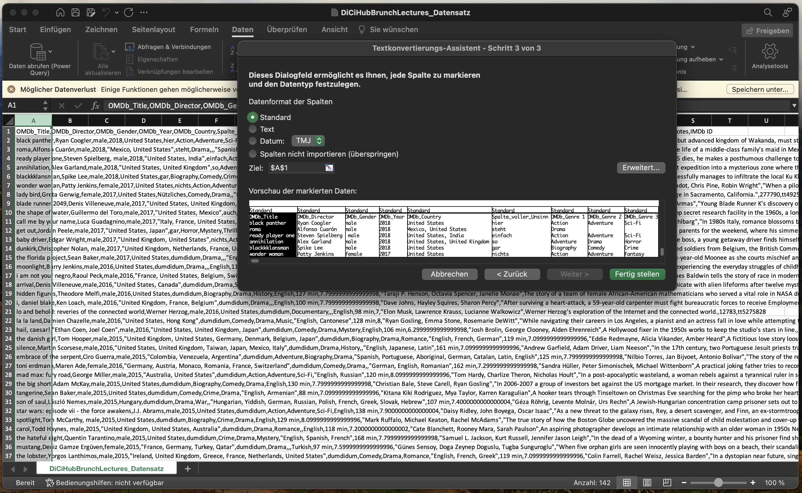
- Anschließend klickt man auf „Fertig stellen“ und Excel trennt die Daten aus der ersten Spalte bei jedem Komma in eine neue Spalte ab. Ein mögliches Problem, was dabei auftreten kann, ist dass auch Spalten aufgeteilt werden, die eigentlich zusammen gehören.
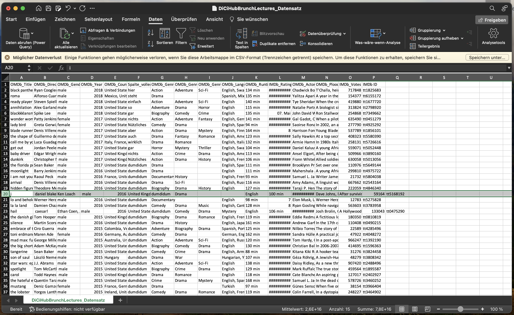
- Auffällige Fehler sollten an dieser Stelle bereinigt werden (hier zum Beispiel, indem man „i, daniel blake“ wieder in Spalte A zusammenfügt und anschließend alle weiteren Werte aus der Zeile eine Spalte aufrücken lässt).
- Wie in Möglichkeit 2 müssen die Werte außerdem unter dem Reiter „Start“ mit der Funktion „Als Tabelle formatieren“ noch in eine Tabelle umgewandelt werden, um weiter mit ihnen arbeiten zu können.
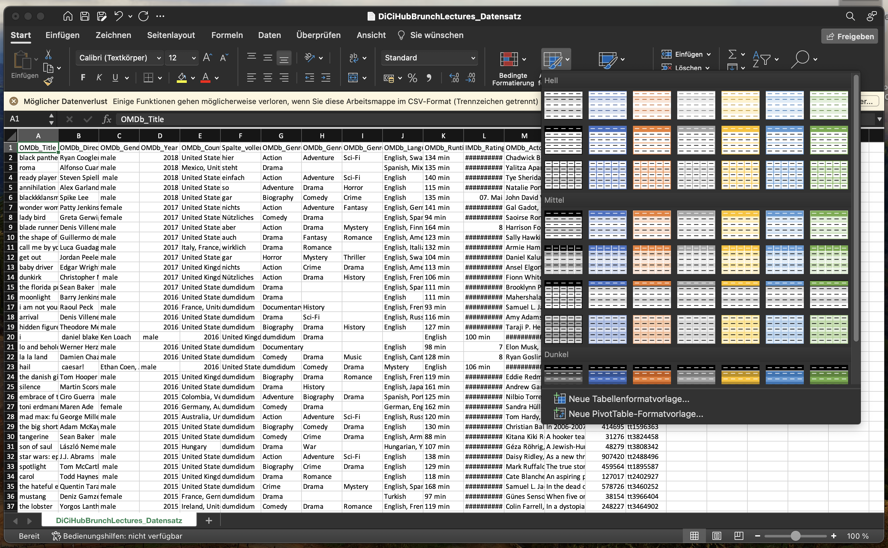
- Ist der Datenbereich korrekt, klickt man in dem daraufhin auftauchenden Fenster auf „OK“.
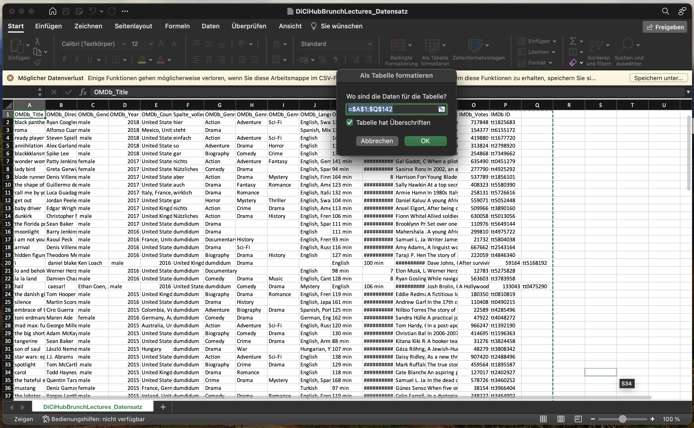
- Hat man beim Importieren der Daten allerdings nicht alle Spalten korrekt formatiert, lässt sich an diesem Punkt dennoch nicht verlässlich mit der Tabelle arbeiten: Hat Excel manchen Spalten von sich aus ein falsches Format zugeordnet (wie hier in Spalte L: aus dem Rating wird ein Datum), muss unter Umständen der gesamte Prozess wiederholt werden, um am Ende die richtigen Werte zu erhalten (da eine Nachkorrektur der Formatierung der Spalte nicht automatisch zum Ursprungswert führt).
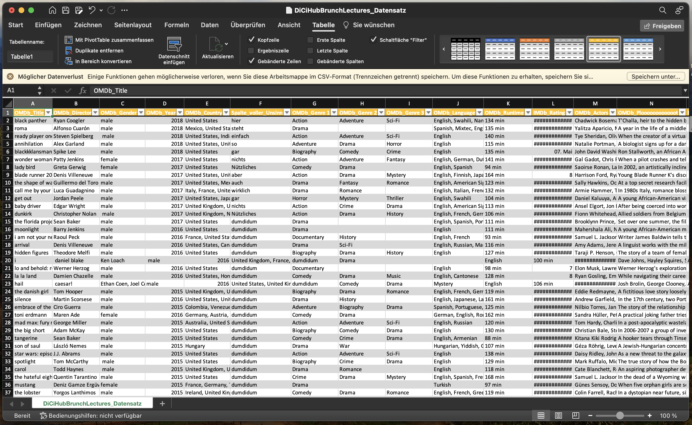
Filtern der Daten in Excel
Wenn man die csv-Datei erfolgreich in Excel geöffnet hat und die Daten in Tabellenform vorliegen, lassen sich diese anschließend einfach durchsuchen, filtern und weiterverarbeiten.
Es kann zum Beispiel hilfreich sein die Filme im Datensatz nach ihrem Erscheinungsjahr zu sortieren.
- Dazu klickt man auf das kleine Dreieck neben der Spaltenbeschriftung.
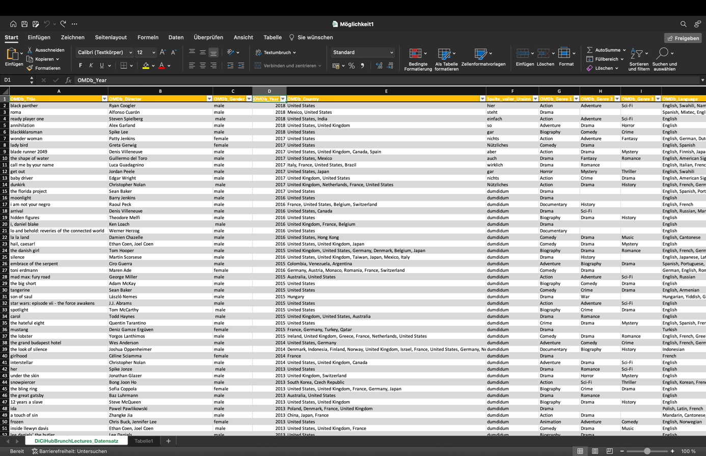
- Daraufhin öffnet sich ein Menüfenster, in dem man zum Beispiel nach einzelnen Jahren Filtern kann, oder sich durch das Klicken auf „Aufsteigend“ alle Titel in der Liste in chronologischer Reihenfolge nach ihrem Erscheinungsjahr anzeigen lassen kann.
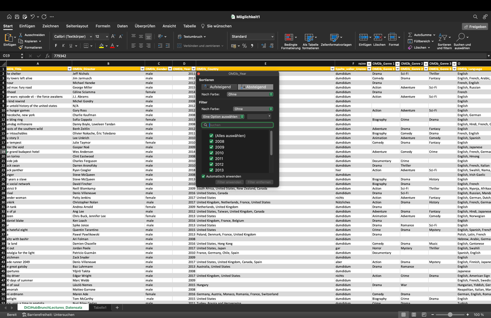
Entsprechend kann man sich zum Beispiel in der Spalte „Gender“ durch das Menüfenster ausschließlich die Filme männlicher oder weiblicher Regisseure anzeigen lassen:
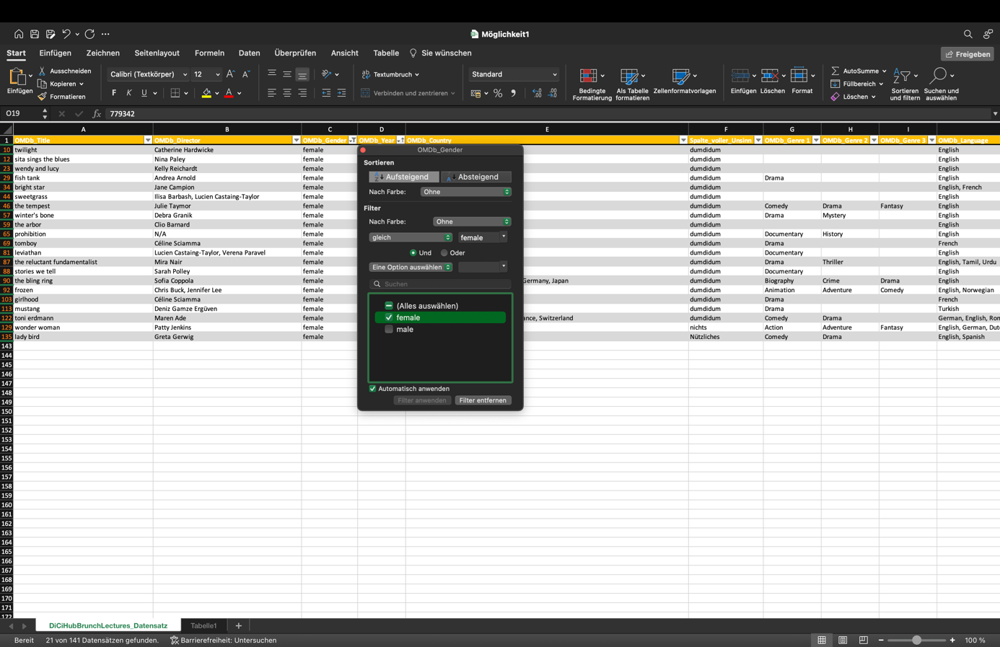
Oder man ordnet die Filmtitel durch die Auswahl „Aufsteigend“ in alphabetischer Reihenfolge:
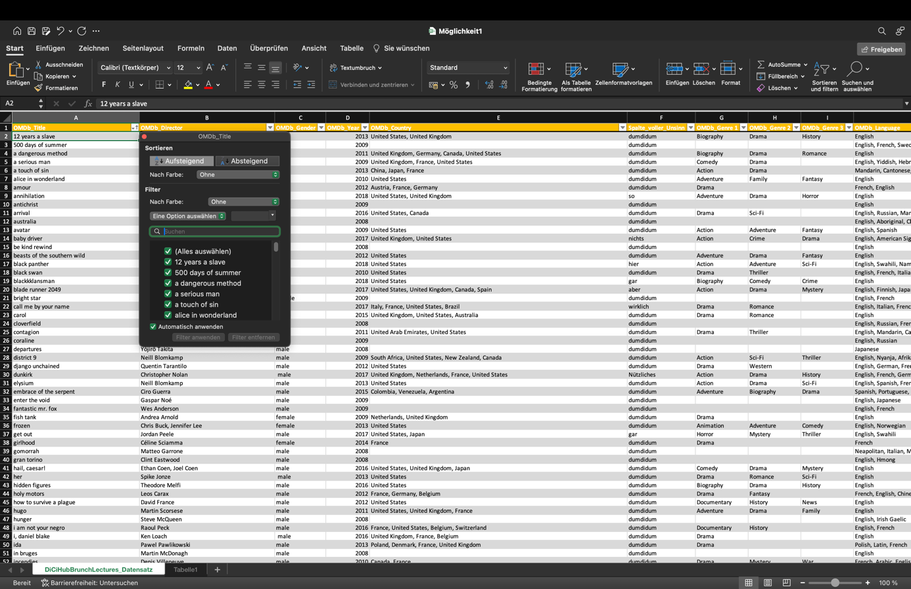
Wenn man wieder alle Daten sehen möchte, wählt man die Filter ab. Gefilterte Spalten sind an der Stelle des kleinen Dreiecks markiert und dadurch leicht zu finden.
Alle Screenshots wurden von Katharina Kauth erstellt. Zuletzt bearbeitet am 31.10.2023